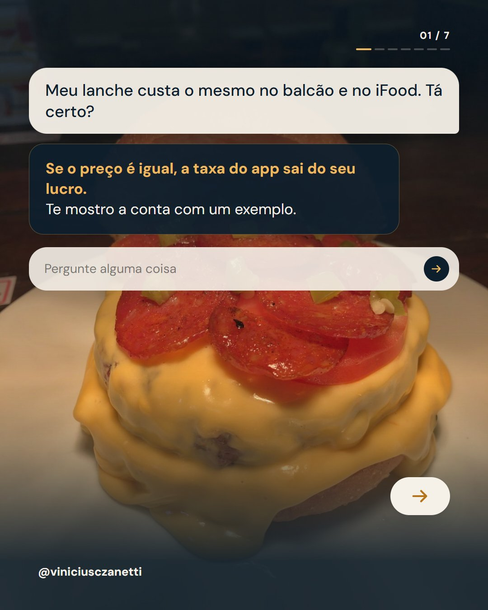

Preço igual no iFood e no balcão: por que a taxa do aplicativo sai do lucro do dono
Num exemplo de lanche de R$ 30, a sobra cai quase pela metade quando a venda passa pelo aplicativo. A conta que acerta o preço do delivery cabe numa linha.
Publicado em 16/11/2026
Muita hamburgueria e pizzaria cobra o mesmo preço pelo lanche no balcão e no aplicativo de delivery. Parece justo com o cliente. Na conta do dono, não é. Segundo o consultor Vinícius Zanetti, quando o preço é igual nos dois canais, a comissão do aplicativo não sai do bolso do cliente. Sai do lucro.
Num exemplo que ele publicou no Instagram, um lanche de R$ 30 deixa R$ 20 para o restaurante no balcão e R$ 10,40 no aplicativo. Para sobrar o mesmo valor nos dois canais, o preço no app precisaria ficar perto de R$ 43.

"Se o preço é igual, a taxa do app sai do seu lucro."Vinícius Zanetti, no carrossel sobre o preço no iFood
Quanto o iFood cobra do restaurante?
Depende do plano. Segundo o blog de parceiros do próprio iFood, com valores vigentes na atualização de 23 de junho de 2026, o Plano Básico, em que o restaurante faz a própria entrega, cobra 12% de comissão sobre o valor do pedido. No Plano Entrega, em que o entregador é do iFood, a comissão é de 23%. Nos dois planos, os pedidos pagos pelo aplicativo têm mais 3,2% de taxa de pagamento online.
| Plano | Comissão | Pagamento online | Total sobre o pedido pago no app |
|---|---|---|---|
| Básico (entrega própria) | 12% | 3,2% | 15,2% |
| Entrega (entregador do iFood) | 23% | 3,2% | 26,2% |
Há ainda uma mensalidade, de R$ 110 no Básico e R$ 150 no Entrega, cobrada só de quem fatura mais de R$ 1.800 por mês no aplicativo. A própria plataforma orienta que o valor que vale é o do contrato de cada loja, que aparece no Portal do Parceiro. Por isso, antes de fazer a conta, o dono precisa abrir o contrato e anotar a taxa do seu plano, e não a de um vizinho.
A conta, passo a passo
O carrossel de Vinícius usa um exemplo redondo. Os números são hipotéticos e servem para mostrar o mecanismo.
- No balcão. Neste exemplo, o lanche custa R$ 30 e leva R$ 10 de ingrediente. Sobram R$ 20 para pagar equipe, aluguel e o lucro.
- No aplicativo. A mesma venda de R$ 30 paga comissão e taxa de pagamento. O exemplo usa 27% do pedido, perto dos 26,2% do Plano Entrega. São R$ 8,10 que saem antes de o dinheiro chegar ao restaurante.
- A embalagem. O delivery ainda tem a embalagem, que no exemplo custa R$ 1,50. Sobram R$ 10,40.
| Neste exemplo | Balcão | App, mesmo preço | App, preço ajustado |
|---|---|---|---|
| Preço do lanche | R$ 30,00 | R$ 30,00 | R$ 43,15 |
| Ingrediente | R$ 10,00 | R$ 10,00 | R$ 10,00 |
| Taxa do app (27%) | - | R$ 8,10 | R$ 11,65 |
| Embalagem | - | R$ 1,50 | R$ 1,50 |
| Sobra | R$ 20,00 | R$ 10,40 | R$ 20,00 |
Com o mesmo preço, a venda no aplicativo deixa quase metade do que o lanche deixa no balcão. O dono olha o volume de pedidos crescendo e acha que o delivery vai bem. Não vai. Ele trabalha mais para ganhar menos por lanche.
Uma ressalva honesta: o exemplo do carrossel não desconta a taxa da maquininha no balcão, que também existe quando o cliente paga no cartão. Na conta real, ela entra do lado do balcão.
Como calcular o preço do lanche no iFood?
O erro mais comum é somar a taxa ao preço. Se a comissão é 27%, o dono acrescenta 27% aos R$ 30 e chega a R$ 38,10. Só que a comissão incide sobre o preço final, e não sobre o preço do balcão. Com R$ 38,10, o aplicativo leva R$ 10,29, e a sobra fica abaixo dos R$ 20.
A conta certa divide, em vez de somar. Vinícius explica assim no carrossel: some o que você quer que sobre, o ingrediente e a embalagem, e divida pelo que fica depois da taxa. Com 27% de taxa, fica 0,73 de cada real vendido.
Neste exemplo: (R$ 20 de sobra + R$ 10 de ingrediente + R$ 1,50 de embalagem) ÷ 0,73 = R$ 43,15. Com esse preço, a taxa leva R$ 11,65 e sobram os mesmos R$ 20 do balcão.
A lógica é a mesma que o blog de parceiros do iFood ensina para precificar o cardápio do delivery: o custo do prato dividido por um menos a soma da margem desejada, da comissão e da taxa de pagamento. A mesma página cita uma faixa de 15% a 25% acima do preço do salão, atribuída a especialistas, sem indicar a fonte. Neste exemplo, a faixa não bastaria: para empatar com o balcão, o preço do app precisou subir 44%. Por isso a regra de bolso não substitui a conta lanche por lanche.
Posso cobrar mais caro no aplicativo do que no balcão?
Para Vinícius, a pergunta está mal colocada. O cliente do aplicativo compra uma coisa diferente do cliente do balcão: compra o lanche e a entrega na porta, com a vitrine da plataforma. O preço precisa refletir isso.
"O iFood não é seu inimigo. Você que não aprendeu a jogar o jogo. O app traz cliente que nunca ia passar na sua porta. O preço dessa entrega precisa estar no lanche, não no seu bolso."Vinícius Zanetti, no carrossel sobre o preço no iFood
Isso não quer dizer subir tudo de uma vez. Um aumento brusco pode derrubar a conversão no aplicativo. O caminho que ele propõe começa pelos cinco lanches mais vendidos, onde a diferença pesa mais no fim do mês.
E preço ajustado não combina com desconto em excesso. Cupom e oferta também saem da sobra do pedido, e promoção demais muda o tipo de cliente que a plataforma entrega, como mostra a matéria Cupom no delivery: por que oferta demais derruba o ticket médio.
O que o dono faz com isso
O carrossel termina com uma lista para fazer no mesmo dia, com os cinco mais vendidos:
- Anote o preço de balcão e o de app de cada lanche.
- Some ingrediente e embalagem. O ingrediente sai da ficha técnica. Sem ficha técnica, o número é chute.
- Confira a taxa do seu plano no app. Comissão mais taxa de pagamento, no contrato do Portal do Parceiro.
- Calcule quanto sobra em cada canal. Preço menos ingrediente, menos taxa, menos embalagem.
- Ajuste o preço do app onde a taxa come a sobra. Use a divisão, nunca a soma.
Depois do ajuste, vale olhar a margem de contribuição de cada lanche no aplicativo. A referência da Zatti é de 35% no mínimo, e de 50% a 55% para uma margem considerada boa. Lanche que não chega a 35% no app, mesmo com o preço corrigido, pede revisão de receita, de porção ou de lugar no cardápio.
Atenção: os valores desta matéria são exemplo. Taxas, mensalidade e planos do iFood mudam e variam por contrato. Faça a conta com a taxa que aparece no seu Portal do Parceiro e com o custo real de cada lanche.
Perguntas frequentes
Quanto o iFood cobra de comissão do restaurante?
Segundo o blog de parceiros do iFood, com valores de junho de 2026, 12% no Plano Básico e 23% no Plano Entrega, mais 3,2% de taxa de pagamento online nos pedidos pagos pelo app. O valor que vale é o do contrato de cada loja.
Como calcular o preço no iFood?
Some a sobra que você quer, o ingrediente e a embalagem e divida por um menos a taxa total. Com 27% de taxa, divide-se por 0,73. Somar a porcentagem ao preço do balcão deixa a conta curta, porque a comissão incide sobre o preço final.
Posso ter preço diferente no iFood e no balcão?
Sim, e é o que Vinícius Zanetti recomenda quando a taxa come a sobra. O próprio blog de parceiros do iFood fala em preço de delivery acima do preço do salão para cobrir os custos do canal.
Quanto mais caro deve ser o preço no aplicativo?
Não existe porcentagem única. Depende da taxa do plano, do custo do lanche e da embalagem. No exemplo do carrossel, para sobrar o mesmo que no balcão, o lanche de R$ 30 precisaria custar cerca de R$ 43 no app.
Fontes
- iFood, blog de parceiros: Taxas do iFood para restaurante: planos e comissões (valores vigentes na atualização de 23/06/2026; página atualizada em 15/09/2026).
- iFood, blog de parceiros: Aprenda como precificar o cardápio do seu delivery (atualizado em 13/07/2026). A faixa de 15% a 25% é atribuída na página a especialistas, sem fonte.
- Vinícius Zanetti, no Instagram: carrossel sobre o preço no iFood (14/10/2026). Os valores do lanche, da taxa de 27% e da embalagem são exemplo.